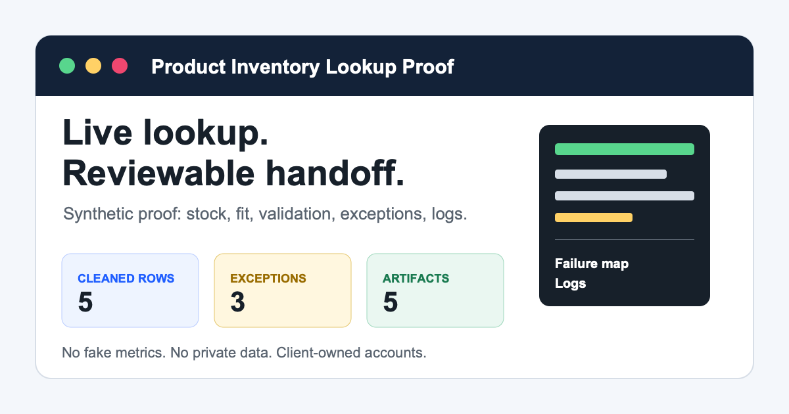

Who This Is For
Automation agencies or lean ops teams with one reporting/API workflow that is already broken, flaky, or hard to hand off.
Best fit: Make, n8n, Zapier, API, CSV, spreadsheet, Odoo-adjacent, or weekly management reporting work.
Live Product/Inventory Lookup & Workflow Rescue Contractor
I build or rescue small live-data workflows for product, inventory, stock, price, fit, reporting, and handoff problems inside your existing Odoo, ERP, API, CSV, spreadsheet, Make, n8n, or Zapier stack.
Toi build/rescue live-data lookup va workflow report dang hong hoac kho ban giao trong stack hien co, co validation, caveat, log, exception output va tai lieu ban giao ro rang.
Synthetic proof only: no client data, no ROI claim, no hours-saved claim.

Automation agencies or lean ops teams with one reporting/API workflow that is already broken, flaky, or hard to hand off.
Best fit: Make, n8n, Zapier, API, CSV, spreadsheet, Odoo-adjacent, or weekly management reporting work.
What breaks, where it breaks, what can be fixed inside the task, and what risk remains out of scope.
One fixed or cleaned workflow/report slice with validation, exception output, clear errors, and execution logs.
A short run note, known limits, and next safe fixes so your team can review the work without broad ownership.
Synthetic browser demo
This demo uses synthetic/recreated data only. It calls no backend, external API, or paid service.
Truthful prior context: the founder previously built an inventory reporting workflow using the Odoo API. Company, dataset, monetary result, percentage improvement, and hours saved are not claimed here.
Public screenshots and demo data are synthetic or recreated unless approved facts are supplied. The proof here is delivery method: failure mapping, validation, exception output, logs, and handoff quality.
Open the proof one-pager for artifact links, acceptance criteria, and handoff notes.
No required paid tool is part of this launch. Client production tools are client-owned and client-paid.
No. Production client workflows should run on client-owned infrastructure or accounts.
I can do a short fit check. Rescue, cleanup, and implementation start as one small paid task.
Send the source type, desired output, and what currently breaks. I will tell you if it fits a small paid rescue task.